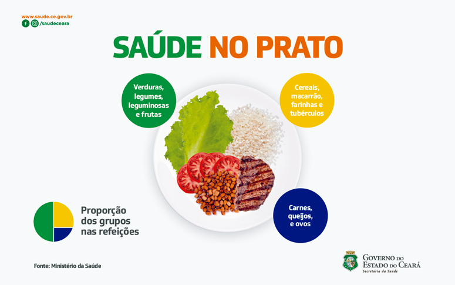

Objetivo da Campanha
A Prefeitura de Fortaleza lançou a campanha "A saúde começa com uma alimentação saudável" para conscientizar a população sobre a importância de bons hábitos alimentares. A campanha visa reduzir os índices de doenças relacionadas à má alimentação, como obesidade, diabetes e doenças cardiovasculares.
Alimentos saudáveis para o consumo e seus benefícios
Veia
Melhora a saúde cardiovascular
Laranja
Fortalece o sistema imunológico
Peito de Frango
Aumenta a energia e disposição
Brócolis

Aumenta a produtividade no dia a dia
O que é o IMC?
O Índice de Massa Corporal (IMC) é uma medida utilizada para avaliar se uma pessoa está dentro do peso ideal em relação à sua altura.